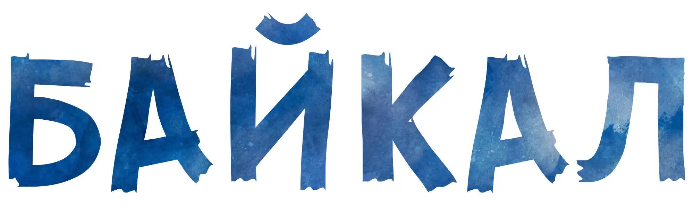

Добрый Доббль «Байкал»
Символы тематической игры Добрый Доббль «Байкал»: 57 карточек про природу, культуру, животных, маршруты и легенды Байкала.
Символы игры
Нажмите на карточку, чтобы открыть описание символа. Стрелками и свайпом можно листать колоду.